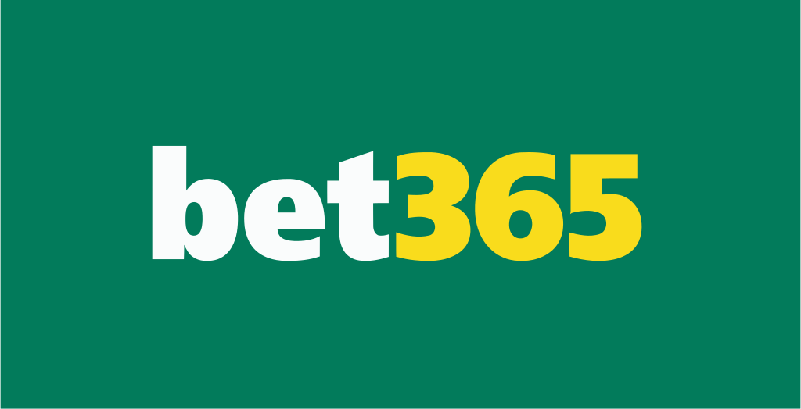

O Que São as Bets e Como Funcionam as Apostas Online no Brasil em 2025
Nos últimos anos, o termo bets se popularizou entre os brasileiros que buscam novas formas de entretenimento e oportunidades de lucro através da internet. Mas afinal, o que são as bets? Como funcionam esses sites? São confiáveis? Legais? E, o mais importante: como ganhar dinheiro apostando em eventos esportivos ou jogos de cassino? Se você está com essas dúvidas, este conteúdo vai esclarecer tudo.
As bets, também chamadas de casas de apostas esportivas online, são plataformas digitais onde é possível apostar com dinheiro real em uma infinidade de eventos e modalidades. Os principais focos são os esportes populares como futebol, basquete, vôlei, tênis e MMA, mas você também encontra opções para Fórmula 1, ciclismo, e até eSports (como CS:GO, LoL e Valorant), que são os jogos eletrônicos competitivos que crescem a cada ano no Brasil e no mundo.
Além das apostas esportivas tradicionais, a maioria das bets modernas oferecem um ambiente completo de cassino online, com jogos como roleta, blackjack, bacará, pôquer, slots (caça-níqueis) e até raspadinhas virtuais. Tudo isso pode ser acessado facilmente pelo celular ou computador, sem sair de casa, com a mesma praticidade de um app de banco digital.
O funcionamento é simples: você cria uma conta na plataforma, faz um depósito via PIX, boleto ou cartão, escolhe o evento que deseja apostar e define o valor. Com isso, já está participando. Se seu palpite estiver certo, você pode sacar os ganhos diretamente para sua conta bancária, geralmente em poucos minutos.
A grande vantagem das apostas esportivas no Brasil é a praticidade. Com poucos cliques você já está apostando, e o PIX tornou os depósitos e saques quase instantâneos, o que impulsionou o crescimento dessas plataformas. Hoje em dia, não é mais necessário esperar dias úteis como antigamente. Apostou, ganhou, sacou.
Além disso, os bônus de boas-vindas, promoções de cashback e apostas grátis são atrativos que fazem parte da rotina dos apostadores. Casas como Betano, Blaze, Bet365, Pix.bet e F12.bet oferecem vantagens exclusivas para quem está começando, aumentando o valor disponível para apostar sem precisar colocar tanto dinheiro do próprio bolso.
Mas é importante ficar atento: com a explosão no número de bets, surgiram também muitas plataformas amadoras ou até fraudulentas. Por isso, é essencial escolher apenas casas de apostas licenciadas, com suporte em português, bom histórico de pagamentos e presença oficial no Brasil. Em 2023, o governo federal publicou a regulamentação oficial para apostas de quota fixa — ou seja, você já sabe quanto vai ganhar no momento em que faz a aposta — tornando o mercado mais seguro e transparente.
Com a nova legislação, as melhores bets brasileiras passaram a operar com exigências claras, como pagar impostos, seguir normas de segurança da informação e aplicar práticas contra lavagem de dinheiro. Isso aumentou a confiança dos apostadores e tirou do mercado muitas empresas picaretas.
Em resumo, as bets são muito mais do que apenas “sites de jogo”. Elas se tornaram verdadeiras plataformas de entretenimento digital com possibilidade real de lucro. Se você quer apostar com inteligência, entender como funcionam as odds, aproveitar promoções legítimas e conhecer as melhores casas de apostas esportivas do Brasil em 2025, continue navegando por este guia. Aqui você vai encontrar tudo o que precisa para começar a apostar online com segurança, responsabilidade e estratégia.
Como Saber se uma Casa de Apostas é Confiável e Segura no Brasil
Com o crescimento explosivo dos sites de apostas no Brasil, é essencial saber como identificar uma bet confiável antes de investir seu dinheiro. Veja abaixo os principais sinais de que um site de apostas esportivas é seguro e legítimo:
- üîí Conexão HTTPS (cadeado no navegador): Sites seguros sempre utilizam criptografia SSL. Verifique se o endere√ßo come√ßa com
https://e exibe o √≠cone de cadeado ao lado da URL. Isso garante que seus dados estão protegidos. - üåê Dom√≠nio .bet.br: A termina√ß√£o
.bet.brindica que o dom√≠nio foi registrado no Brasil com CPF ou CNPJ, o que já filtra muitas empresas suspeitas e melhora a seguran√ßa jur√≠dica. - üìÑ Licenciamento válido no Brasil: Aposte apenas em plataformas com opera√ß√£o regularizada conforme a Lei 13.756/2018 ou que estejam em processo de licenciamento oficial pelo Minist√©rio da Fazenda.
- üí∏ Pagamentos via PIX, boleto e cartão: Casas confiáveis oferecem m√©todos de pagamento nacionais, como PIX instant√¢neo, boleto bancário e cart√µes de cr√©dito de grandes bandeiras.
- ⭐ Boa reputação no Reclame Aqui: Pesquise o nome da bet no Reclame Aqui para verificar a opinião de outros apostadores. Sites com muitas queixas ou sem presença no portal são sinal de alerta.
- üí¨ Suporte em portugu√™s: Uma casa de apostas confiável oferece atendimento via chat, e-mail ou WhatsApp, com resposta rápida e suporte 100% em portugu√™s para o público brasileiro.
Ao seguir esses critérios, você estará muito mais protegido contra golpes e terá uma experiência de apostas online segura, confiável e transparente.
üîé Clique aqui para baixar o PDF oficial com a lista completa (documento original publicado pelo Minist√©rio da Fazenda).
üéØ Dicas de Jogo Responsável
- Defina um limite de gastos: Nunca aposte mais do que pode perder. Estabeleça um valor mensal ou semanal para diversão e respeite esse limite.
- Se perder, não tente recuperar: Evite o impulso de apostar mais para tentar recuperar perdas. Isso pode agravar a situação.
- A casa sempre tem vantagem: As apostas são feitas para entreter, não como uma fonte garantida de renda. Jogue apenas por diversão.
- Desenvolva autocontrole: Faça pausas, monitore suas emoções e saiba quando parar.
- Busque ajuda se necessário: Se perceber sinais de compulsão ou dificuldades para controlar as apostas, procure apoio profissional.
Minhas Casas de Aposta Favoritas

|
Betano | Visitar |

|
Sportingbet | Visitar |
| Galera.bet | Visitar | |

|
EstrelaBet | Visitar |
| Reals | Visitar | |
| UX | Visitar | |
|  | Bet365 | Visitar |
| BRBet | Visitar | |
| Vera | Visitar | |
| QGBet | Visitar | |
| GeralBet | Visitar |
üìÉ Conclusão: Aposte com Intelig√™ncia e Responsabilidade
Aproveite os bônus de boas-vindas e jogue com responsabilidade.